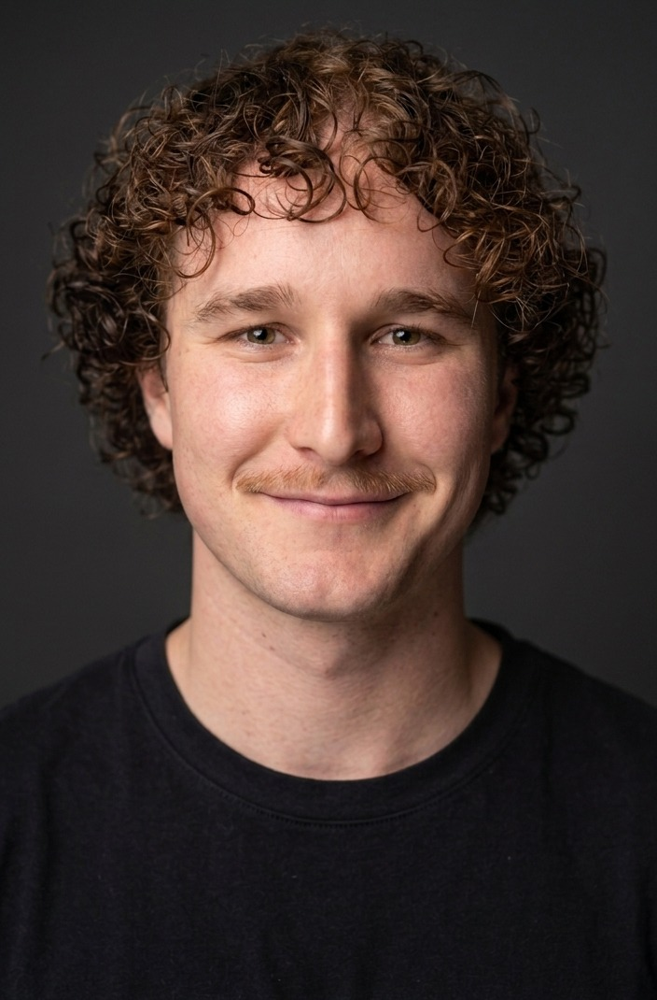

Archie Ballinger
Industrial Designer
I design objects end to end, working on safety-critical and sustainability problems, from research and electronics to prototypes that actually work. Based in Melbourne.
Scroll to explore
↓

[ portrait photo ]
Protective WearablesMedical & Emergency DevicesSustainability & SystemsCharacter & Collectibles
About
Hi, I am Archie Ballinger, an Industrial Designer
I design objects end to end: research, CAD, electronics, interface, and a prototype that actually works. My practice sits across protective & detective wearables, medical and emergency devices, sustainability and systems design, and character & collectible objects.
(Industrial Design Honours at RMIT)
(Freelancing via Ballinger Technology)
(7 years a surf lifesaver & squad coach)
(Based in Melbourne, VIC)
Experience
Download CV
2026 – Now
Freelance Industrial DesignerVictoria Police · Ballinger Technology
2026 – Now
Freelance Industrial DesignerWA Police · Ballinger Technology
2022 – 2024
Studio TechnicianRMIT
2015 – Now
Squad Coach & Surf LifesaverWorking under pressure
2022 – 2026
B. Industrial Design (Honours)RMIT · Advanced Manufacturing
Capabilities
See the work
User research
Sketching
CAD
Rendering
3D printing
Model-making & finishing
CMF
Prototyping
UX & UI design
PCB design & build
Systems & service design